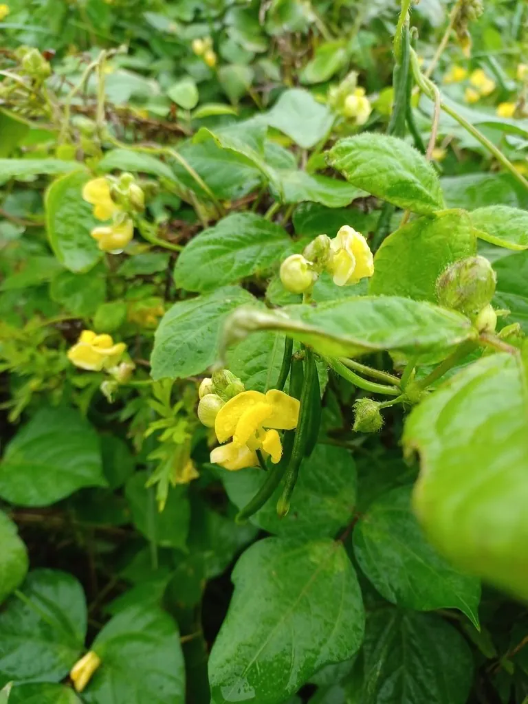

农作物与经济植物 · 植物界
红豆 Vigna angularis

红豆的籽粒呈暗红色，可制豆沙、红豆汤和各类糕点，是东亚传统食材，也是重要的食用豆类作物之一。
- 分类
- 门被子植物门纲双子叶植物纲目豆目科豆科属豇豆属
- 栖息环境
- 温带与亚热带的平原旱地，喜温暖、光照充足
- 地理分布
- 原产东亚，现主产于中国、日本、朝鲜半岛等地
- 保护级别
- 暂无评估（栽培作物）
物种志
红豆是一年生草本，株高 0.3–0.8 m，茎直立或半蔓生，有棱，全株有毛。叶片为三出复叶，小叶卵形或菱状卵形。花黄色，蝶形，自花授粉。荚果细长，内含 4–10 粒种子，种子圆柱形或短圆形，种皮暗红色，种脐白色。根系有根瘤，能固氮。
红豆原产东亚，中国、日本、朝鲜半岛都有悠久的栽培历史，是东亚传统的食用豆类。它喜温暖、光照充足，适宜在排水良好的壤土中种植，生育期较短，可与玉米等间作。红豆籽粒富含淀粉、蛋白质和膳食纤维，煮熟后沙糯香甜，是制作豆沙、红豆汤、红豆糕、元宵馅料的主要原料；也可煮粥、发豆芽。中医认为红豆有利水消肿之效。红豆在日本还常与米饭同煮，做成“赤饭”，是节庆食品。
形态与习性
- 株高0.3–0.8 m
- 叶三出复叶
- 花黄色蝶形花
- 种子暗红色，种脐白色
- 用途豆沙、红豆汤与糕点
- 特性根瘤固氮，生育期较短
趣味知识
- 红豆煮熟后沙糯香甜，是豆沙、红豆糕和元宵馅料的主要原料。
- 红豆在日本常与米饭同煮成“赤饭”，是节庆时的食品。
- 红豆的根上长有根瘤，能固氮养地。